Нейрографика — это простое рисование, где не нужно уметь рисовать. Линии, круги, цвет — а на выходе спокойствие, ясность и красивая работа на память. Приходите в мою уютную домашнюю студию.
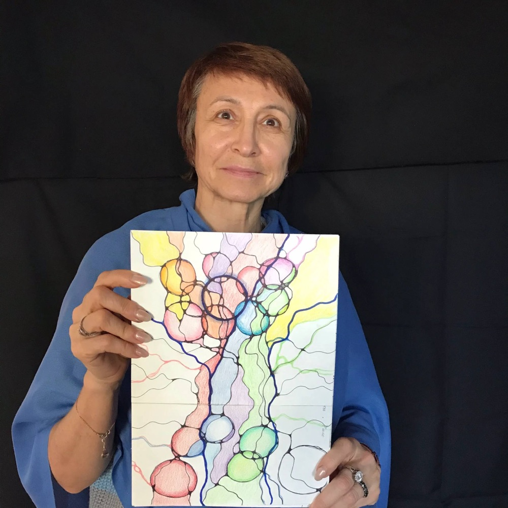
Это метод осознанного рисования: вы переводите на бумагу то, что внутри, и мягко «перерисовываете» его. Не нужно таланта и опыта — только бумага, маркер и цветные карандаши.
Выпускаем. Свободные линии — всё, что сейчас беспокоит, выходит на лист.
Скругляем. Убираем острые углы — и на бумаге, и в мыслях становится мягче.
Наполняем цветом. Рисунок оживает, а вы уходите с ощущением лёгкости.
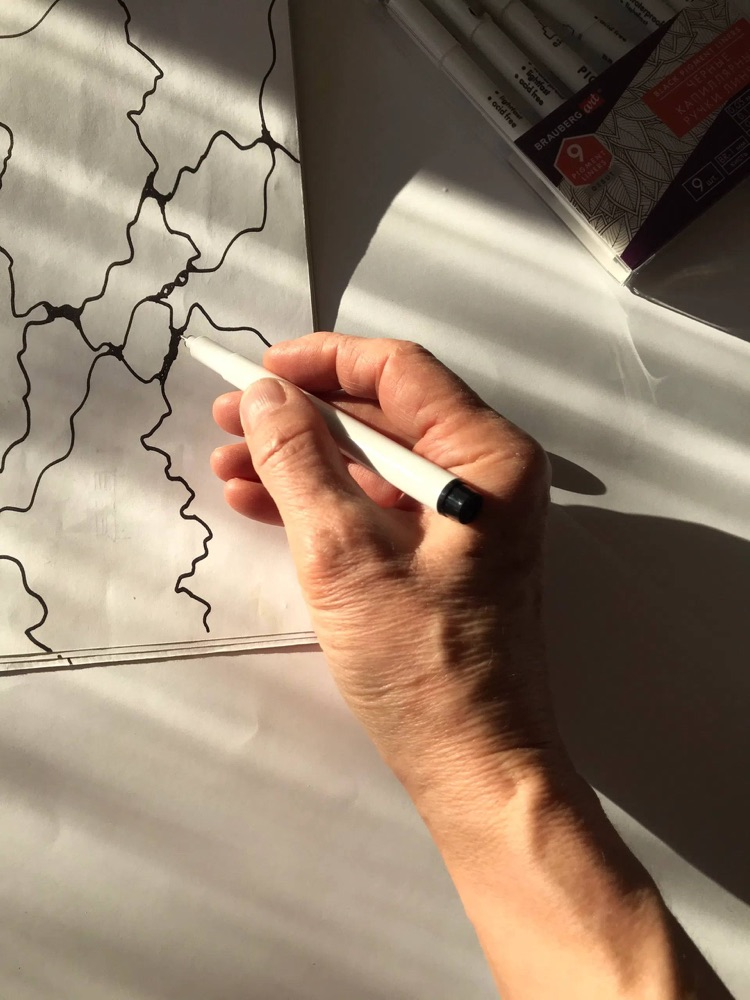
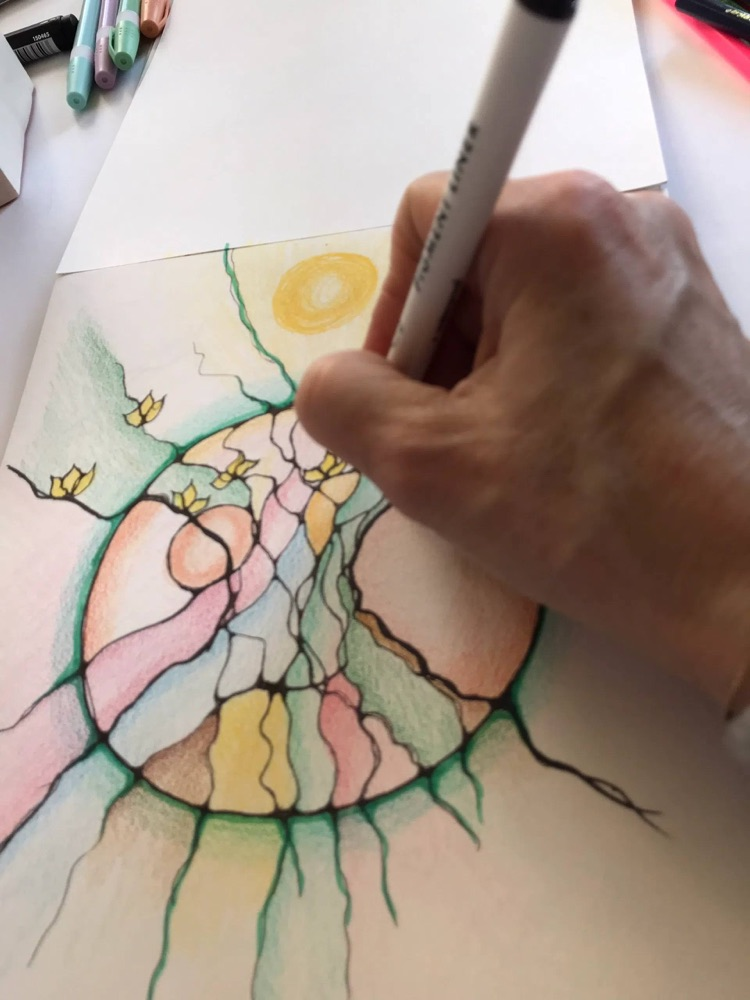
Нейрографика подходит всем — возраст и умение рисовать не важны.
Когда внутри тревога, суета и мысли по кругу.
Разобраться, чего хочется, и увидеть свой следующий шаг.
Нарисовать цель — и настроиться на неё.
Два часа для себя, тишина, карандаши и чай.
Нейрографика — практика для самочувствия и творчества, она не заменяет помощь врача или психолога.
Все занятия — вживую, в моей домашней студии. Материалы даю.
Попробовать нейрографику и уйти со своей первой работой.
Небольшая группа, одна тема — например, «Желание», «Отпускаю тревогу», «Мой год».
Только вы и ваш запрос. Разбираем то, что важно именно вам, в своём темпе.
Каждая — чья-то история, перерисованная в цвет.
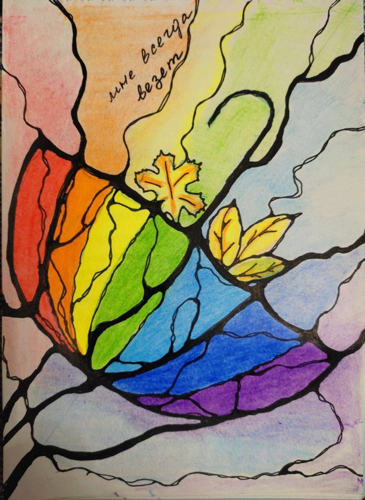
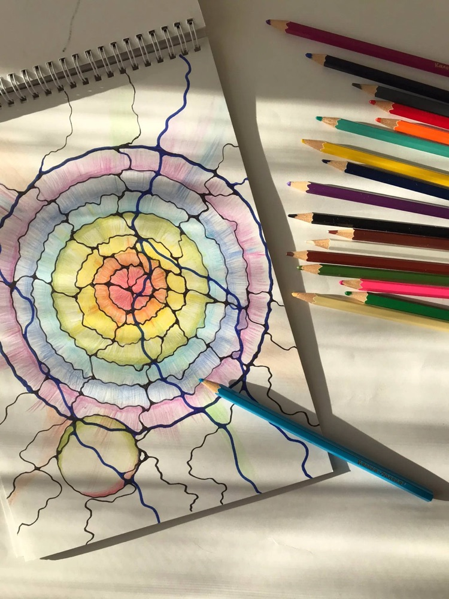
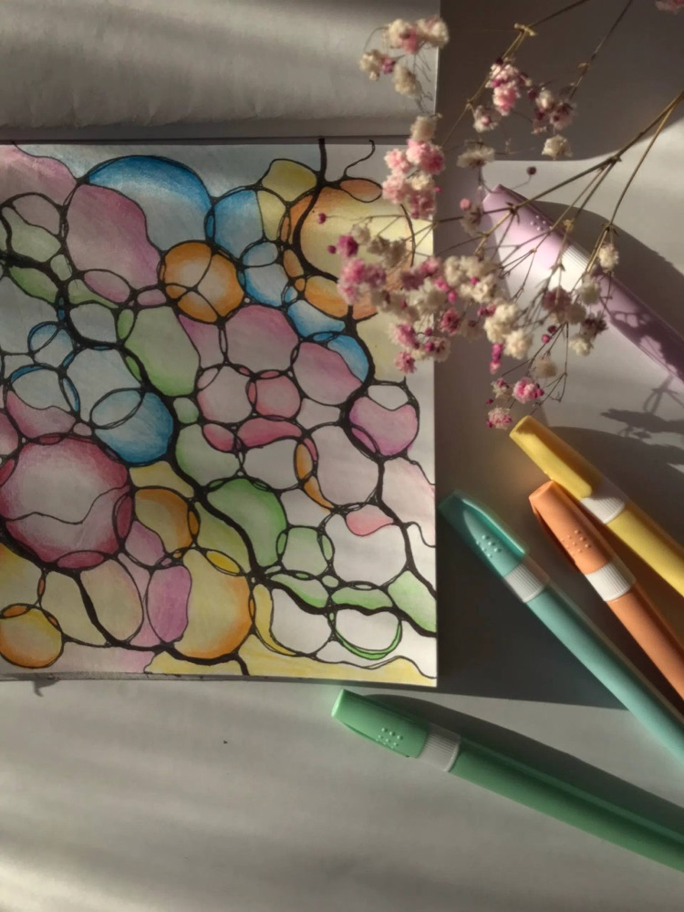
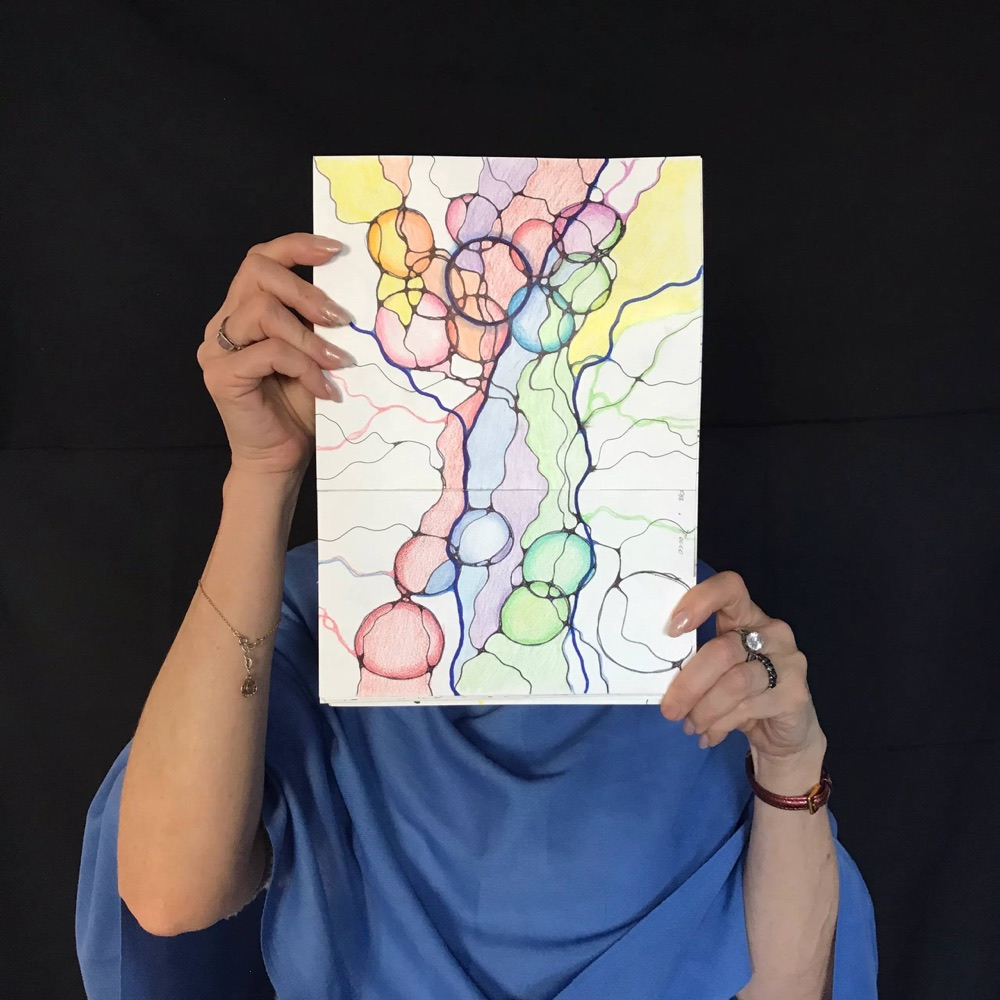
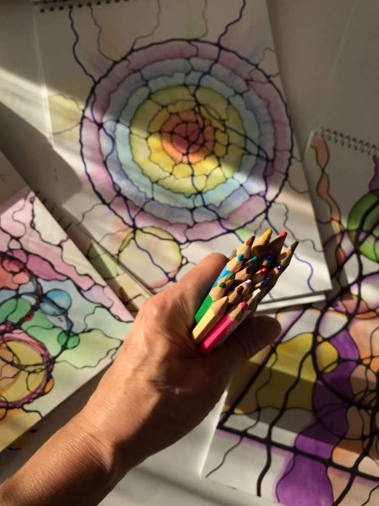
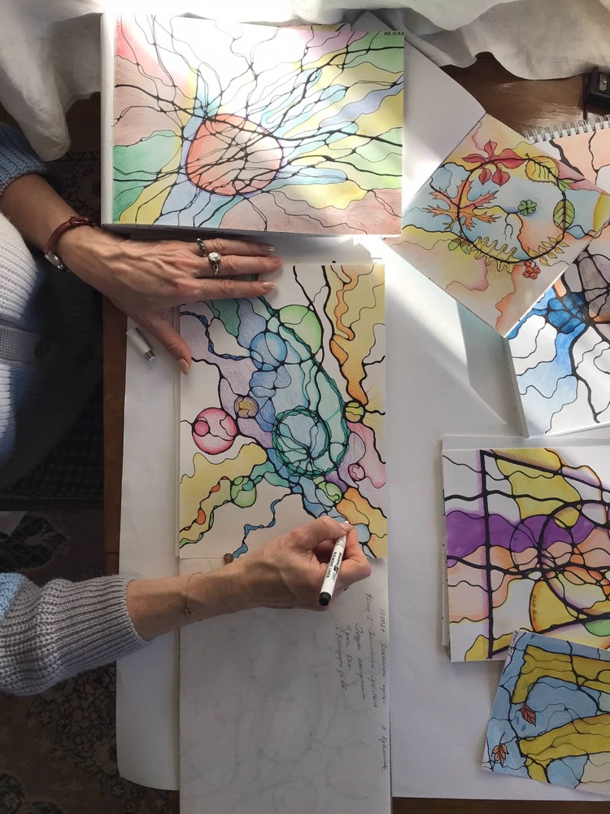
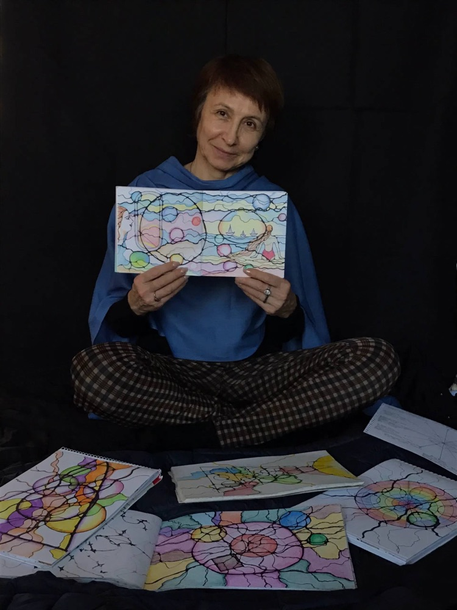
Нейрографика пришла в мою жизнь и изменила её — теперь я делюсь ею с другими. Я прохожу обучение на инструктора, и до сертификата мне осталась одна работа.
На моих занятиях не бывает «неправильно»: каждая линия — ваша, каждый цвет — ваш. Я рядом, подскажу и поддержу.
«Мне всегда везёт» — так называется одна из моих работ. Пусть и вам повезёт с первой линии.
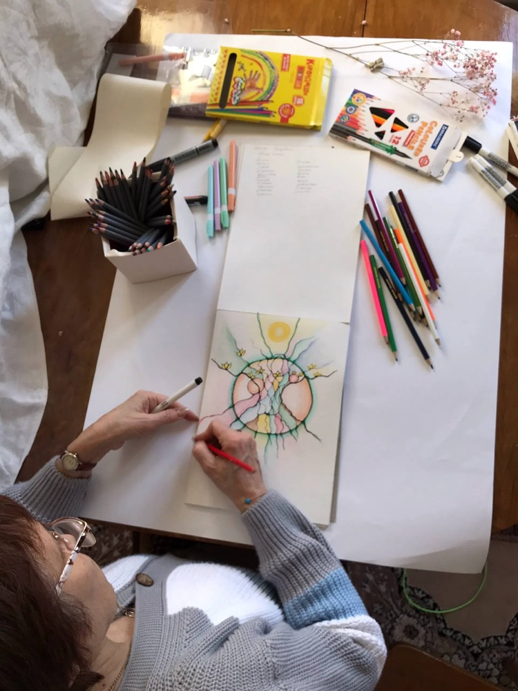
Да! Здесь не нужно рисовать «красиво» — только линии, круги и цвет. Это получается у всех.
Ничего — все материалы у меня. Только хорошее настроение и тему, с которой хочется поработать.
Здесь будет ваш ответ: например, разовое — около 2 часов.
Конечно — на мастер-класс вместе ещё веселее.
Напишите, какой формат интересен, — подберём удобное время.